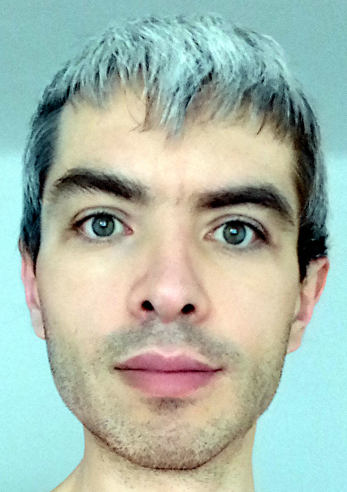

O stronie
Ciało człowieka jest punktem - zagęszczeniem - kontinuum Pola Świadomości. Świadomość jest przedłużeniem Boskości -
niedualnego - nie podzielnego na wielość bytów - Źródła. Komponent Ego Świadomości tworzy optykę wielości perspektyw.
Równolegle - istnieje spektrum modalności tego w jaki sposób Boskość rozpoznaje Siebie w Świadomości. Ludzkie ciała
funkcjonują w spektrum znania siebie rozpiętym pomiędzy Czystą Boskością oraz gradacjami poczucia oddzielenia. Kolektyw
ludzkich ciał reprezentuje dominację poczucia oddzielenia - funkcjonowanie pojedynczych ciał zdominowane jest optyką
zorientowanej na przetrwanie modyfikacji Ego: ludzkie ego jest zawężeniem inteligencji Boskości do instynktu przetrwania
broniącego form tożsamości opartych na liniowym przetwarzaniu informacji. Taka modalność inteligencji nie jest konieczna
do zapewniania dobrobytu ciału człowieka - jej dominacja jest efektem sprzężenia subtelnych impresji nagromadzonych w
Polu Świadomości - oraz tendencji do utożsamiania się z uzewnętrznianiem się tych impresji jako mentalnych konstrukcji
oraz emocjonalnych fluktuacji.
Ludzkie funkcjonowanie nie jest ograniczone do wyrażania optyki oddzielenia. Każde z ciał może obudzić się do głębszego
znania siebie. Świadomość w formie ludzkiej fizjologii zdolna jest do transcendowania (przekraczania identyfikacji
z liniowym przetwarzaniem) oraz transmutacji (uwalniania zadawnionych impresji) - podobnie jak ludzkie ciało zdolne
jest do odpoczynku i regeneracji. Przebudzenie (trwałe przesunięcie perspektywy poza dominację liniowej identyfikacji)
jest naturalnym odruchem Boskości wracającej do zrównoważonego funkcjonowania poprzez punkt ludzkiego ciała. W pełni
dojrzałe przebudzenie wyraża się jako migracja perspektywy poprzez Niedualne Stadia, kulminująca się w urzeczywistnieniu
Czystej Boskości [1-2]. Niezależnie od stadium ewolucji, rafinacja i klaryfikacja kontynuują
się tak długo jak długo trwa ludzkie ciało.
Intencją tej strony jest dzielenie się informacją na temat przebudzenia i transmutacji z nadzieją, że będzie ona łatwa do
interpretacji w kontekście własnego doświadczenia. Odniesienie [3] jest przykładem zaawansowanej
formy transmutacji.

Tomek
Odniesienia:
[1] Niedualne Oddanie - ścieżka przebudzenia oparta
na kultywacji Oddania Sobie jako Boskości oraz filarów Obserwacji, Suplikacji, Transmutacji i Służby jako
wehikułu urzeczywistnienia Czystej Boskości; zawiera klaryfikację Niedualnych Stadiów;
[2] Rozmowy
pomiędzy Andrew Hewson-em i Davidya Buckland-em o Stadiach Oświecenia;
[3] Dorothy Rowe - usługa zdalnej pracy z energią;
webinaria zbiorowej pracy z energią; zawiera klaryfikację struktur Pola Świadomości; zobacz też uzdrowienia aktywowane podczas czytania;